Trigger
In MySQL, a trigger is a stored program invoked automatically in response to an event such as insert, update, or delete that occurs in the associated table. For example, you can define a trigger that is invoked automatically before a new
row is inserted into a table.
MySQL supports triggers that are invoked in response to the INSERT, UPDATE or DELETE event.
The SQL standard defines two types of triggers: row-level triggers and statement-level triggers.
A row-level trigger is activated for each row that is inserted, updated, or deleted. For example, if a table has 100 rows inserted, updated, or deleted, the trigger is automatically invoked 100 times for the 100 rows affected.
A statement-level trigger is executed once for each transaction regardless of how many rows are inserted, updated, or deleted.
MySQL supports only row-level triggers. It doesn’t support statement-level triggers

Advantages of triggers
- Triggers provide another way to check the integrity of data.
- Triggers handle errors from the database layer.
- Triggers give an alternative way to run scheduled tasks.
- By using triggers, you don’t have to wait for the scheduled events to run because the
triggers are invoked automatically before or after a change is made to the data in a table.
- Triggers can be useful for auditing the data changes in tables.
Disadvantages of triggers
- Triggers can only provide extended validations, not all validations. For simple validations, you can use the UNIQUE,CHECK and FOREIGN KEY constraints.
- Triggers can be difficult to troubleshoot because they execute automatically in the database, which may not invisible to the client applications.
- Triggers may increase the overhead of the MySQL Server.
Introduction to MySQL CREATE TRIGGER statement
The CREATE TRIGGER statement creates a new trigger. Here is the basic syntax of the CREATE TRIGGER statement:
In this syntax:
- First, specify the name of the trigger that you want to create after the
CREATE TRIGGER keywords. Note that the trigger name must be unique within a database.
- Next, specify the trigger action time which can be either
BEFORE or AFTER which indicates that the trigger is invoked before or after each row is modified.
- Then, specify the operation that activates the trigger, which can be
INSERT, UPDATE, or DELETE.
- After that, specify the name of the table to which the trigger belongs after the
ON keyword.
- Finally, specify the statement to execute when the trigger activates. If you want to execute multiple statements, you use the
BEGIN END compound statement.
The trigger body can access the values of the column being affected by the DML statement.
To distinguish between the value of the columns BEFORE and AFTER the DML has fired, you use the NEW and OLD modifiers.
For example, if you update the column description, in the trigger body, you can access the value of the description before the update OLD.description and the new value NEW.description.
The following table illustrates the availability of the OLD and NEW modifiers:
| Trigger Event |
OLD |
NEW |
INSERT |
No |
Yes |
UPDATE |
Yes |
Yes |
DELETE |
Yes |
No |
MySQL trigger examples
Let’s start creating a trigger in MySQL to log the changes of the employees table.

First, create a new table named employees_audit to keep the changes to the employees table:
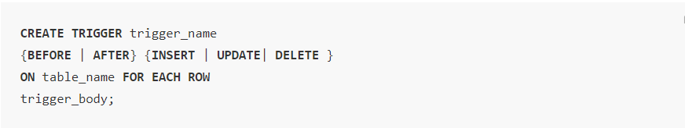
First, create a new table named employees_audit to keep the changes to the employees table:
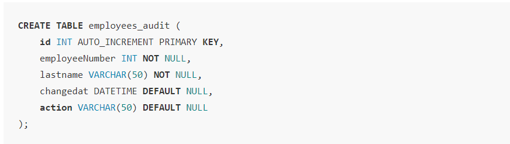
Next, create a BEFORE UPDATE trigger that is invoked before a change is made to the employees table.
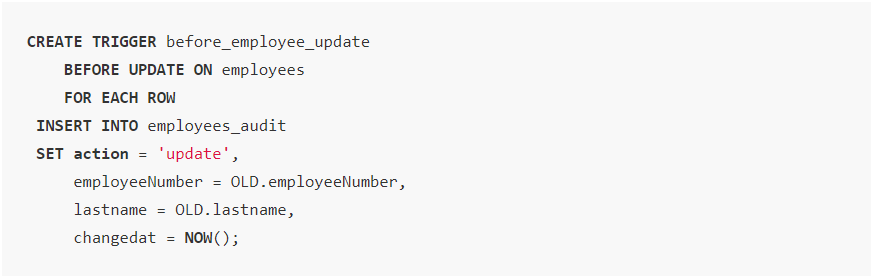
Introduction to MySQL DROP TRIGGER statement
The DROP TRIGGER statement deletes a trigger from the database.
Here is the basic syntax of the DROP TRIGGER statement:
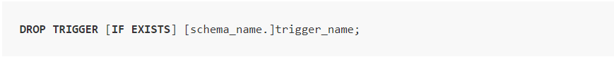
In this syntax:
- First, specify the name of the trigger that you want to drop after the
DROP TRIGGER keywords.
- Second, specify the name of the schema to which the trigger belongs. If you skip the schema name, the statement will drop the trigger in the current database.
- Third, use
IF EXISTS option to conditionally drops the trigger if the trigger exists. The IF EXISTS clause is optional.
If you drop a trigger that does not exist without using the IF EXISTS clause, MySQL issues an error. However, if you use the IF EXISTS clause, MySQL issues a NOTE instead.
The DROP TRIGGER requires the TRIGGER privilege for the table associated with the trigger.
Note that if you drop a table, MySQL will automatically drop all triggers associated with the table.
MySQL DROP TRIGGER example
First,create a table called billings for demonstration:
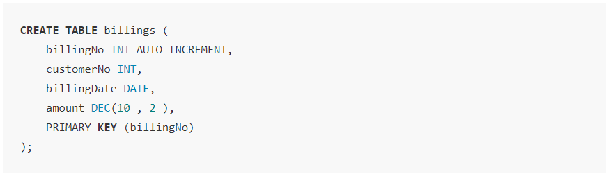
Second,create a new trigger called BEFORE UPDATE that is associated with the billings table:
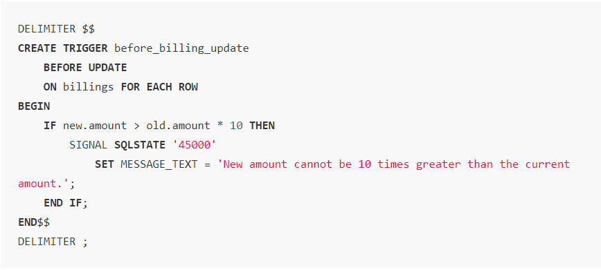
If you are not familiar with the DELIMITER statement, check it out here in the stored procedure statement.
The trigger activates before any update. If the new amount is 10 times greater than the current amount, the trigger raises an error.
Third, show the triggers:
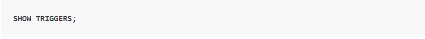
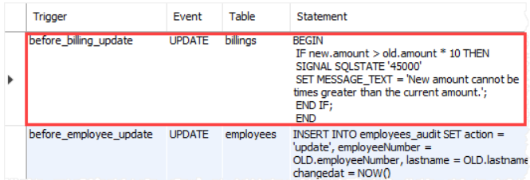
Fourth, drop the before_billing_update trigger:
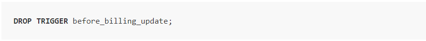
Finally, show the triggers again to verify the removal:
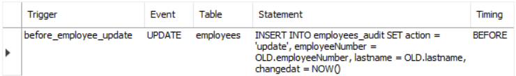
cursors
Oracle creates a memory area, known as the context area, for processing an SQL statement, which contains all the information needed for processing the statement; for example, the number of rows processed, etc.
A cursor is a pointer to this context area. PL/SQL controls the context area through a cursor. A cursor holds the rows (one or more) returned by a SQL statement. The set of rows the cursor holds is referred to as the active set.
You can name a cursor so that it could be referred to in a program to fetch and process the rows returned by the SQL statement, one at a time. There are two types of cursors −
- Implicit Cursors
- Explicit cursors
Implicit Cursors
Whenever a DML statement (INSERT, UPDATE and DELETE) is issued, an implicit cursor is associated with this statement. For INSERT operations, the cursor holds the data that needs to be inserted. For UPDATE and DELETE operations, the cursor
identifies the rows that would be affected.
In PL/SQL, you can refer to the most recent implicit cursor as the SQL cursor, which always has attributes such as %FOUND, %ISOPEN, %NOTFOUND, and %ROWCOUNT. The SQL cursor has additional attributes,
%BULK_ROWCOUNT
and %BULK_EXCEPTIONS, designed for use with the FORALL statement. The following table provides the description of the most used attributes −
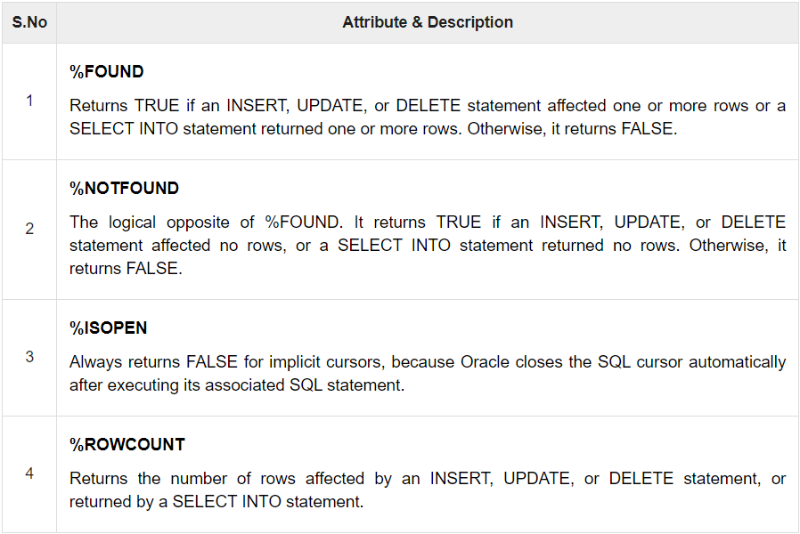
Any SQL cursor attribute will be accessed as sql%attribute_name as shown below in the example.
Example
We will be using the CUSTOMERS table we had created and used in the previous chapters.

The following program will update the table and increase the salary of each customer by 500 and use the SQL%ROWCOUNT attribute
to determine the number of rows affected −
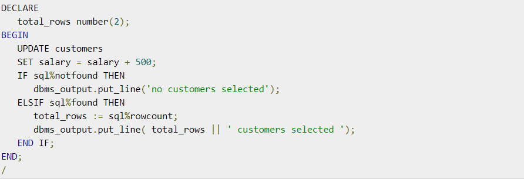
When the above code is executed at the SQL prompt, it produces the following result −
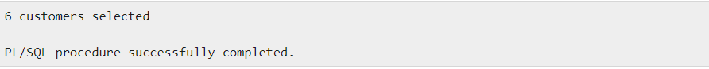
If you check the records in customers table, you will find that the rows have been updated −
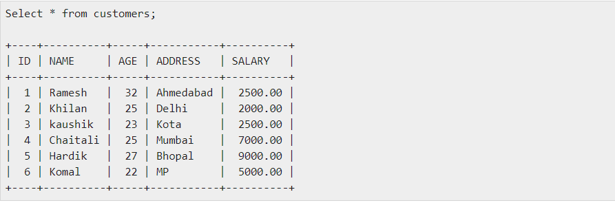
Explicit Cursors
Explicit cursors are programmer-defined cursors for gaining more control over the context area. An explicit cursor should be defined in the declaration section of the PL/SQL Block. It is created on a SELECT Statement which returns
more than one row.
The syntax for creating an explicit cursor is −
Working with an explicit cursor includes the following steps −
- Declaring the cursor for initializing the memory
- Opening the cursor for allocating the memory
- Fetching the cursor for retrieving the data
- Closing the cursor to release the allocated memory
Declaring the Cursor
Declaring the cursor defines the cursor with a name and the associated SELECT statement. For example −
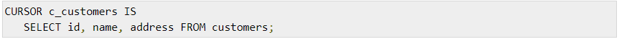
Opening the Cursor
Opening the cursor allocates the memory for the cursor and makes it ready for fetching the rows returned by the SQL statement into it.
For example, we will open the above defined cursor as follows −
Fetching the Cursor
Fetching the cursor involves accessing one row at a time. For example, we will fetch rows from the above-opened cursor as follows −
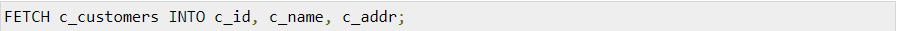
Closing the Cursor
Closing the cursor means releasing the allocated memory. For example, we will close the above-opened cursor as follows −
Example
Following is a complete example to illustrate the concepts of explicit cursors &minua;
When the above code is executed at the SQL prompt, it produces the following result −
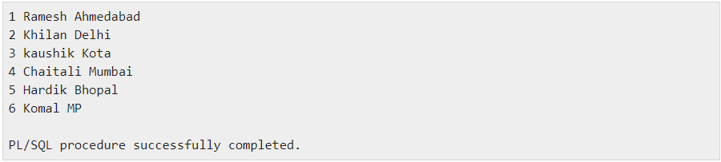